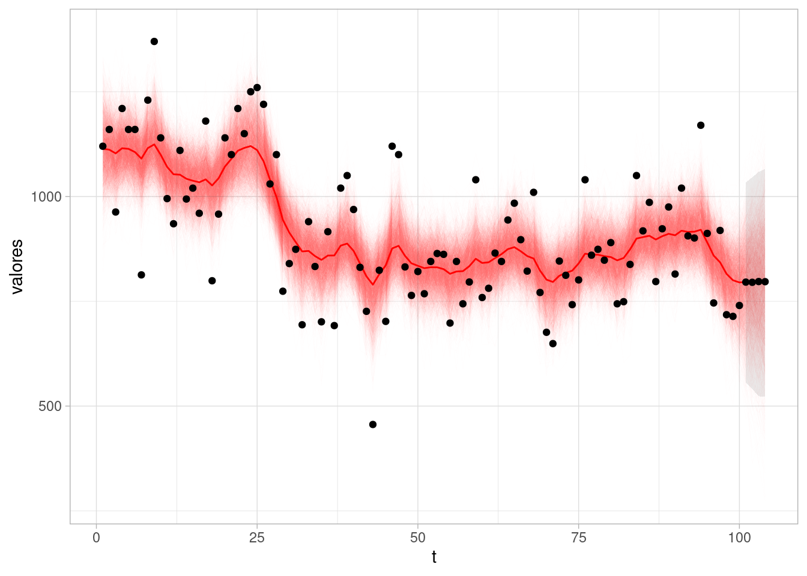
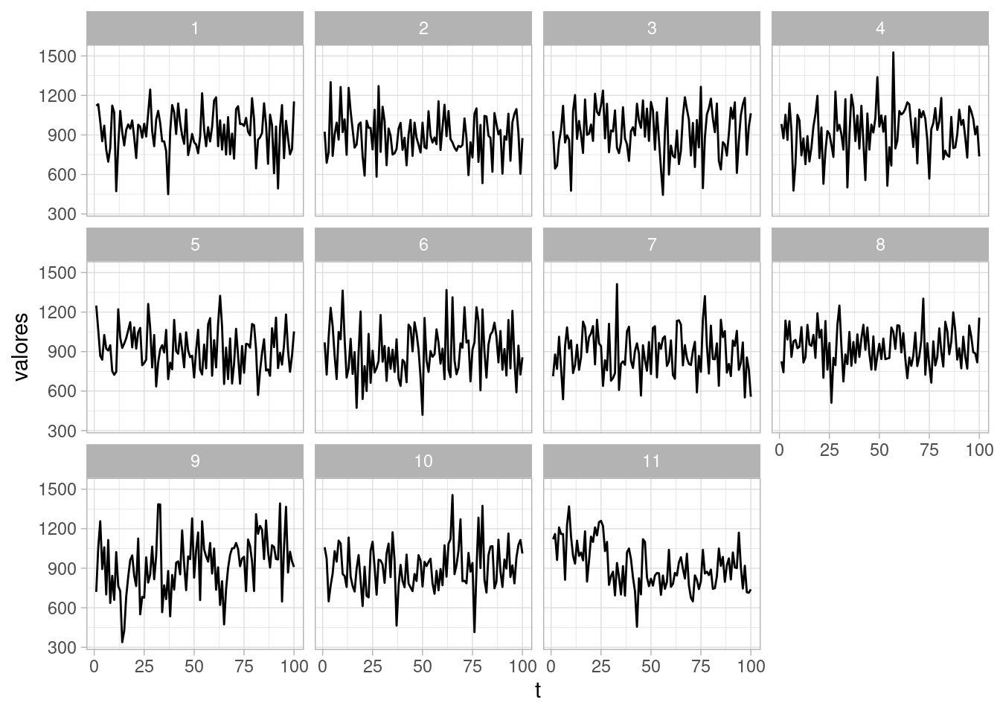
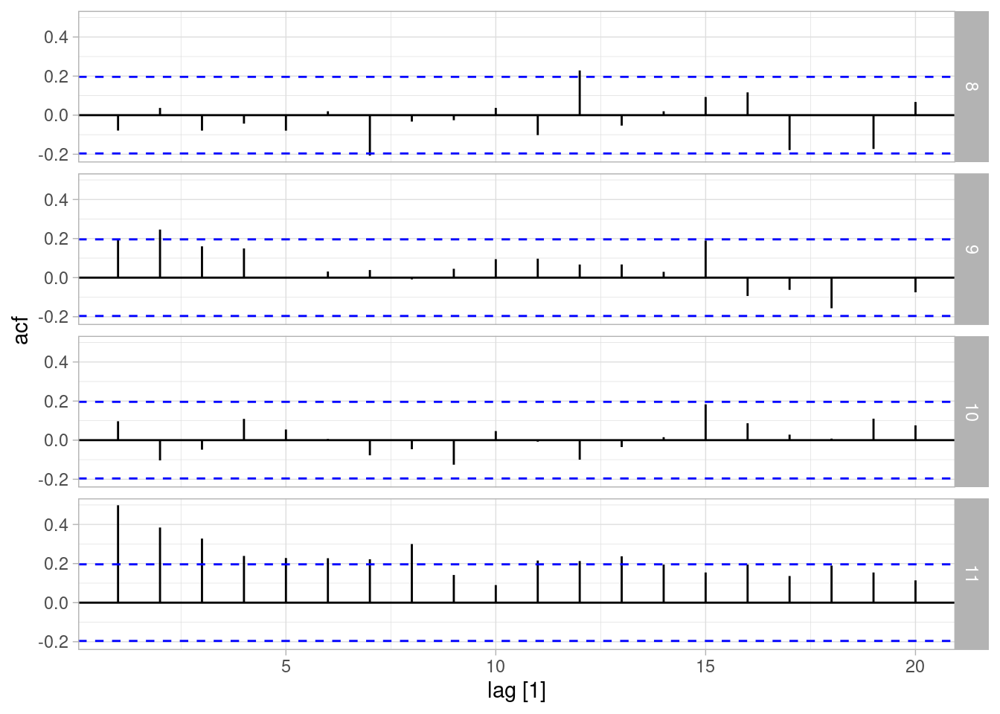
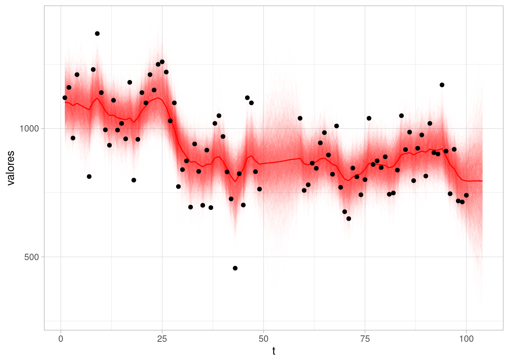
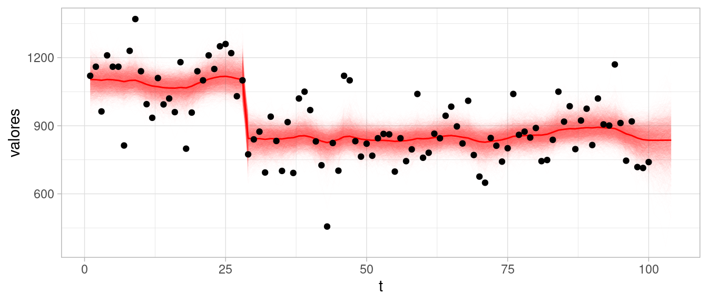
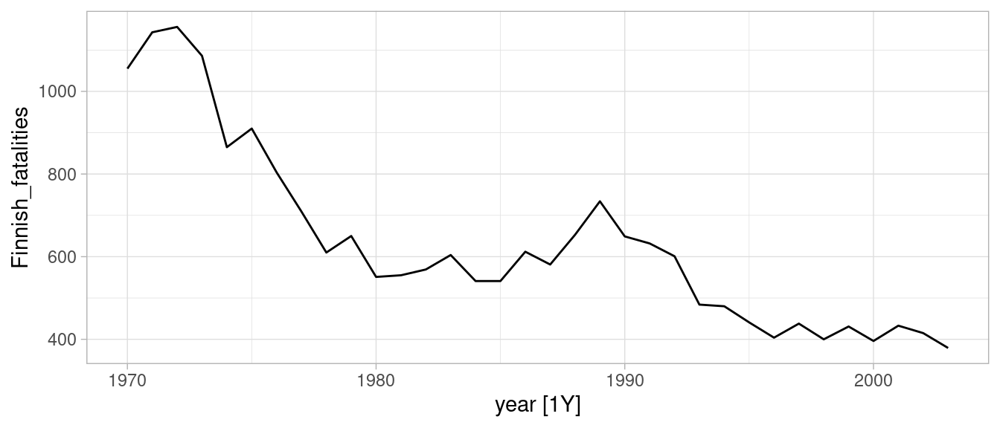
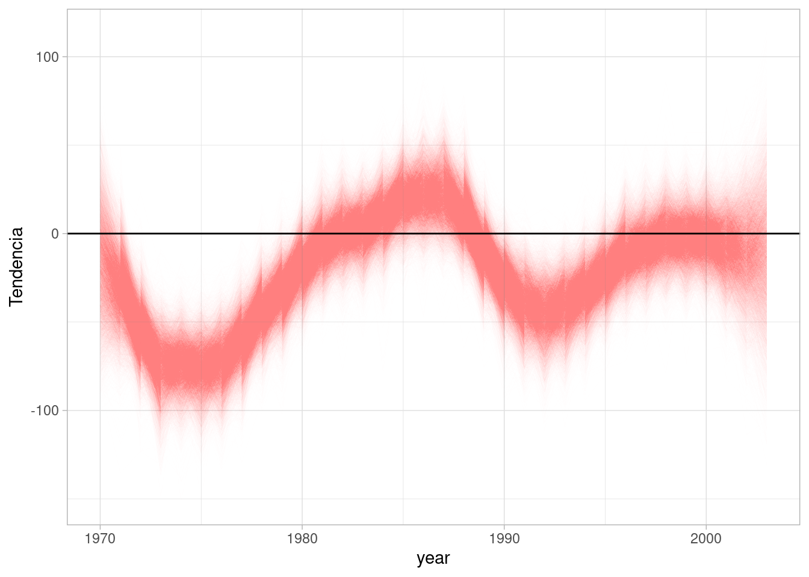
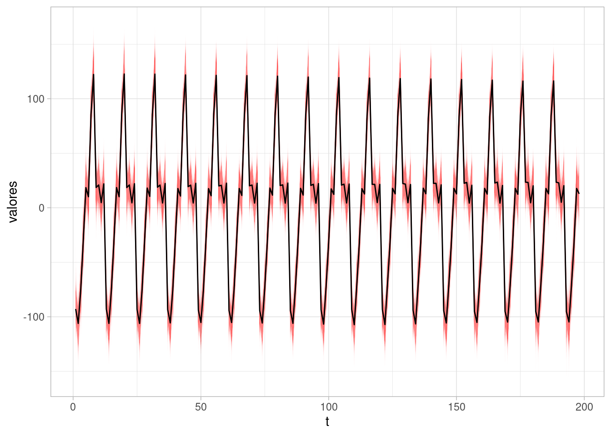

Código
library(tidyverse)
library(kableExtra)
library(DiagrammeR)
locale <- Sys.setlocale("LC_TIME", "es_ES.UTF-8")
library(lubridate)
library(fpp3)
ggplot2::theme_set(ggplot2::theme_light())library(tidyverse)
library(kableExtra)
library(DiagrammeR)
locale <- Sys.setlocale("LC_TIME", "es_ES.UTF-8")
library(lubridate)
library(fpp3)
ggplot2::theme_set(ggplot2::theme_light())En esta parte veremos una introducción a los modelos bayesianos dinámicos de espacio de estados. Estos modelos engloban otros enfoques (ARIMA, suavizamiento exponencial) como casos particulares, y nos permite:
Aunque en muchos procesos tiene sentido considerar que la observación \(y_t\) es una función causal de observaciones pasadas, más generalmente podemos pensar que existen estados que determinan el proceso generador de la serie. El estado en el que se encuentra una proceso en un determinado momento puede tener varias componentes, algunas estándar como nivel actual o periodo de estacionalidad, pero también otras menos estándar, como niveles de otras variables.
En primer lugar, consideraremos modelar la tendencia-ciclo de series con el enfoque de espacio de estados. En primer lugar, tenemos una ecuación de observación, que está dada por
\[y_t = \textrm{nivel}_t + \epsilon_t,\] donde las \(\epsilon_t \sim N(0,\sigma_\epsilon)\) independientes. Es decir, dado el nivel, las observaciones \(y_t\) son independientes. Adicionalmente tenemos una ecuación de transición de estados, que en este caso es simplemente:
\[\textrm{nivel}_t = \textrm{nivel}_{t-1} + \eta_t\] donde \(\eta_t \sim N(0,\sigma_\eta)\) independientes.
Podemos hacer un diagrama como sigue para esta situación:
grViz('
digraph {
graph [ranksep = 0.2]
node [shape=circle]
nt
nt1
nt2
ntm1
etm1
et
et1
et2
node [shape=plaintext]
# Y1 [label = <Y<SUB>1</SUB>>]
dots [label = "..."]
Ytm1 [label = <Y<SUB>t-1</SUB>>]
Yt [label = <Y<SUB>t</SUB>>]
Yt1 [label = <Y<SUB>t+1</SUB>>]
Yt2 [label = <Y<SUB>t+2</SUB>>]
etm1 [label = <e<SUB>t-1</SUB>>]
et [label = < e<SUB>t. </SUB>>]
et1 [label = <e<SUB>t+1</SUB>>]
et2 [label = <e<SUB>t+2</SUB>>]
ntm1 [label = <n<SUB>t-1</SUB>>]
nt [label = < n<SUB>t </SUB>>]
nt1 [label = <n<SUB>t+1</SUB>>]
nt2 [label = <n<SUB>t+2</SUB>>]
edge [minlen = 3]
#Y1 -> dots
#dots -> Ytm1
#Ytm1 -> Yt
#Yt -> Yt1
#Yt1 -> Yt2
ntm1 -> Ytm1
ntm1 -> nt
nt1 -> Yt1
nt -> Yt
nt2 -> Yt2
nt -> nt1
nt1 -> nt2
#e1 -> Y1
etm1 -> Ytm1
et -> Yt
et1 -> Yt1
et2 -> Yt2
{rank=same; Ytm1; Yt; Yt1; Yt2}
{rank=max; ntm1; nt; nt1; nt2}
{rank=min; etm1; et; et1; et2}
}
', width = 300, height = 150)Nótese que en esta gráfica, las \(y_t\) no son independientes: están correlacionadas a través de caminos abiertos que pasan por el estado, que en este caso es el nivel de la serie.
Los modelos de espacio de estados para serie de tiempo consisten en dos ecuaciones. Si \(y_t\) son los datos observados y \(\theta_t\) son los parámetros que describen el estado, tenemos la ecuación de observación \[y_{t} = f(\theta_{t}, \epsilon_t)\] Es decir, cómo se relaciona el estado con las observaciones, y una ecuación de evolución del estado: \[\theta_{t} = g(\theta_{t-1}, \eta_t)\] En los modelos dinámicos lineales (DLM), \(f\) y \(g\) son funciones lineales, es decir \[y_t = F_t\theta_t + \epsilon_t,\] y
\[\theta_t = G_t\theta_{t-1} + R_t\eta_t,\] donde suponemos, en general, que \(\eta_t \sim N(0,\Sigma_t)\) y \(\epsilon_t \sim N(0,S_t)\) son normales multivariadas independientes.
Nota: más adelante veremos detalles de este planteamiento, en particular para los DLMs, y por qué aún cuando haya dependencias de más largo plazo en estado siempre es posible escribir nuestros modelos de esta forma.
En el modelo de nivel local lo reescribimos por conveniencia como:
\[y_t = \alpha_t + \epsilon_t,\] donde las \(\epsilon_t \sim N(0,\sigma_\epsilon)\) independientes, y
\[\alpha_t = \alpha_{t-1} + \eta_t\] donde \(\eta_t \sim N(0,\sigma_\eta)\) independientes. En este caso, \(F_t=1\) , \(G_t=1\), y \(R_t =1\) según la notación de arriba.
Para completar este modelo, es necesario:
Usualmente consideramos que el nivel debe tener movimientos relativamente suaves, de manera que \(p(\sigma_\eta)\) debe estar adecuadamente concentrada cerca de 0.
Existen dos tipos de análisis que podemos hacer de una serie de tiempo: análisis retrospectivo o análisis en línea. El primero es más útil para entender el comportamiento de la serie del tipo dada toda la información que tenemos, y el segundo es más útil cuando buscamos hacer pronósticos.
Comenzaremos estudiando los modelos de espacio de estados desde un punto de vista retrospectivo.
Una vez que tenemos todos los datos de la serie, ¿qué podemos decir de su evolución en el tiempo?
Este análisis busca examinar las distribuciones \(p(\theta_t|y_1,y_2,\ldots, y_T),\) es decir, examinar la posterior de los estados dado el conocimiento completo de la serie.
Empezamos con un ejemplo clásico y simple, que consiste en medidas anuales del nivel del río Nilo.
Usaremos Stan para ver los detalles de la implementación del modelo de nivel local:
library(cmdstanr)
source("../R/limpiar_draws.R")
mod_archivo <- "../src/series-de-tiempo/modelo-nivel-local.stan"
modelo_nivel <- cmdstan_model(mod_archivo)
read_lines(mod_archivo, skip = 20, n_max = 40) |>
cat(sep = "\n")transformed parameters {
vector[N + n_h] mu;
vector[N + n_h] alpha;
alpha[1] = alpha_1;
mu[1] = alpha[1];
// evolucion estado
for(t in 2:(N + n_h)){
alpha[t] = alpha[t-1] + z_nivel[t] * sigma_nivel;
mu[t] = alpha[t];
}
}
model {
// modelo de observaciones
y[ii_obs] ~ normal(mu[ii_obs], sigma_obs);
// iniciales
alpha_1 ~ normal(y[1], s_obs);
z_nivel ~ normal(0, 1);
sigma_nivel ~ normal(0, q * s_obs);
sigma_obs ~ normal(0, s_obs);
}
generated quantities{
vector[N] y_rep;
vector[n_h] y_f;
for(t in 1:N){
y_rep[t] = normal_rng(mu[t], sigma_obs);
}
for(h in 1:n_h){
y_f[h] = normal_rng(mu[N + h], sigma_obs);
}
}sims <- modelo_nivel$sample(
data = list(y = Nile, N = length(Nile), s_obs = 200, q = 0.5, n_h = 4,
ii_obs = 1:length(Nile), N_obs = length(Nile)),
parallel_chains = 4, refresh = 1000, init = 0.1, step_size = 0.1,
adapt_delta = 0.99)Running MCMC with 4 parallel chains...
Chain 1 Iteration: 1 / 2000 [ 0%] (Warmup)
Chain 2 Iteration: 1 / 2000 [ 0%] (Warmup)
Chain 3 Iteration: 1 / 2000 [ 0%] (Warmup)
Chain 4 Iteration: 1 / 2000 [ 0%] (Warmup)
Chain 2 Iteration: 1000 / 2000 [ 50%] (Warmup)
Chain 2 Iteration: 1001 / 2000 [ 50%] (Sampling)
Chain 3 Iteration: 1000 / 2000 [ 50%] (Warmup)
Chain 3 Iteration: 1001 / 2000 [ 50%] (Sampling)
Chain 1 Iteration: 1000 / 2000 [ 50%] (Warmup)
Chain 1 Iteration: 1001 / 2000 [ 50%] (Sampling)
Chain 4 Iteration: 1000 / 2000 [ 50%] (Warmup)
Chain 4 Iteration: 1001 / 2000 [ 50%] (Sampling)
Chain 2 Iteration: 2000 / 2000 [100%] (Sampling)
Chain 2 finished in 10.1 seconds.
Chain 3 Iteration: 2000 / 2000 [100%] (Sampling)
Chain 3 finished in 10.1 seconds.
Chain 4 Iteration: 2000 / 2000 [100%] (Sampling)
Chain 4 finished in 10.4 seconds.
Chain 1 Iteration: 2000 / 2000 [100%] (Sampling)
Chain 1 finished in 12.6 seconds.
All 4 chains finished successfully.
Mean chain execution time: 10.8 seconds.
Total execution time: 12.8 seconds.Mostramos primero nuestra estimación de las desviaciones estándar para el nivel y para la observación:
sims$summary(c("sigma_obs", "sigma_nivel")) |>
select(variable, mean, q5, q95, rhat)# A tibble: 2 × 5
variable mean q5 q95 rhat
<chr> <dbl> <dbl> <dbl> <dbl>
1 sigma_obs 121. 101. 142. 1.00
2 sigma_nivel 45.0 21.7 74.8 1.00Y ahora resumimos y mostramos cómo se ve el nivel inferido bajo nuestro modelo.
sims_nivel_tbl <- sims$draws(c("mu"), format = "df") |>
limpiar_draws(c("mu")) Warning: Dropping 'draws_df' class as required metadata was removed.media_tbl <- sims_nivel_tbl |>
group_by(variable, t) |>
summarise(media = mean(valores), q5 = quantile(valores, 0.05),
q95 = quantile(valores, 0.95))ggplot(sims_nivel_tbl |> filter(variable == "mu")) +
geom_line(aes(x = t, y = valores, group = .draw),
alpha = 0.01, size = 0.1, colour = "red") +
geom_line(data = media_tbl, aes(x = t, y = media), colour = "red") +
geom_point(data = tibble(y = Nile), aes(x = 1:length(Nile), y = Nile))Warning: Using `size` aesthetic for lines was deprecated in ggplot2 3.4.0.
ℹ Please use `linewidth` instead.
En esta gráfica:
En el análisis retrospectivo, los residuales entre observaciones y ajustados no se pueden interpretar como errores de predicción a un paso: estos residuales incluyen información de toda la serie (valores pasados y futuros del tiempo \(t\) que estamos considerando).
Podemos hacer chequeos predictivos posteriores simulando distintas series a partir de los parámetros ajustados, y viendo si la estructura difiere (y cómo difiere) de los datos observados. En las siguientes gráficas, sólo una de ellas tiene los datos reales, y el resto son simuladas del modelo:
obs_rep_tbl <- sims$draws(c("y_rep"), format = "df") |>
limpiar_draws(c("y_rep"))
resumen_tbl <- obs_rep_tbl |>
filter(.draw <= 10) resumen_tbl <- resumen_tbl |>
bind_rows(tibble(t = 1:length(Nile), valores = Nile, .draw = 11))
ggplot(resumen_tbl, aes(x = t, y = valores)) + geom_line() +
facet_wrap(~ .draw)
Como es usual, cualquier resumen relevante puede usarse para hacer chequeos predictivos posteriores, por ejemplo, las gráficas de acutocorrelación de datos simulados (una caja tiene los verdaderos datos observados):
resumen_tbl |> as_tsibble(index = t, key = .draw) |>
filter(.draw > 5, t <= 100) |>
ACF(valores) |> autoplot()
Finalmente, podemos ver cómo se ven pronósticos bajo este modelo. En este caso, en la parte de cantidades generadas incluímos el código relevante. Nuestro pronóstico podríamos graficarlo como sigue (con intervalos de 90%, por ejemplo):
pronosticos_tbl <- sims$draws(c("y_f"), format = "df") |>
limpiar_draws(c("y_f")) |>
group_by(variable, t) |>
summarise(media = mean(valores), q5 = quantile(valores, 0.05),
q95 = quantile(valores, 0.95)) |>
mutate(t = t + length(Nile))
ggplot(sims_nivel_tbl |> filter(variable == "mu")) +
geom_line(aes(x = t, y = valores, group = .draw),
alpha = 0.01, size = 0.1, colour = "red") +
geom_line(data = media_tbl, aes(x = t, y = media), colour = "red") +
geom_point(data = tibble(y = Nile), aes(x = 1:length(Nile), y = Nile)) +
geom_ribbon(data = pronosticos_tbl, aes(x = t, y = media, ymin = q5,
ymax = q95), alpha = 0.1) +
geom_point(data = pronosticos_tbl, aes(x = t, y = media))
Supongamos que en nuestro ejemplo no utilizáramos nivel dinámico, sino constante.
sims_desajuste <- modelo_nivel$sample(
data = list(y = Nile, N = length(Nile), s_obs = 200, q = 0.00001,
n_h = 4, ii_obs = 1:length(Nile), N_obs = length(Nile)),
parallel_chains = 4, refresh = 1000, init = 0.1, step_size = 0.1,
adapt_delta = 0.99)Running MCMC with 4 parallel chains...
Chain 1 Iteration: 1 / 2000 [ 0%] (Warmup)
Chain 2 Iteration: 1 / 2000 [ 0%] (Warmup)
Chain 3 Iteration: 1 / 2000 [ 0%] (Warmup)
Chain 4 Iteration: 1 / 2000 [ 0%] (Warmup)
Chain 1 Iteration: 1000 / 2000 [ 50%] (Warmup)
Chain 1 Iteration: 1001 / 2000 [ 50%] (Sampling)
Chain 2 Iteration: 1000 / 2000 [ 50%] (Warmup)
Chain 2 Iteration: 1001 / 2000 [ 50%] (Sampling)
Chain 4 Iteration: 1000 / 2000 [ 50%] (Warmup)
Chain 4 Iteration: 1001 / 2000 [ 50%] (Sampling)
Chain 3 Iteration: 1000 / 2000 [ 50%] (Warmup)
Chain 3 Iteration: 1001 / 2000 [ 50%] (Sampling)
Chain 1 Iteration: 2000 / 2000 [100%] (Sampling)
Chain 2 Iteration: 2000 / 2000 [100%] (Sampling)
Chain 4 Iteration: 2000 / 2000 [100%] (Sampling)
Chain 1 finished in 3.0 seconds.
Chain 2 finished in 3.0 seconds.
Chain 4 finished in 2.9 seconds.
Chain 3 Iteration: 2000 / 2000 [100%] (Sampling)
Chain 3 finished in 3.2 seconds.
All 4 chains finished successfully.
Mean chain execution time: 3.0 seconds.
Total execution time: 3.4 seconds.Repetimos nuestros chequeos posteriores predictivos:
obs_rep_tbl <- sims_desajuste$draws(c("y_rep"), format = "df") |>
limpiar_draws(c("y_rep")) Warning: Dropping 'draws_df' class as required metadata was removed.resumen_tbl <- obs_rep_tbl |>
filter(.draw <= 10) #|>
#group_by(variable, t, indice, .draw) |>
#summarise(media = mean(valores), q5 = quantile(valores, 0.05),
# q95 = quantile(valores, 0.95))resumen_tbl <- resumen_tbl |>
bind_rows(tibble(t = 1:length(Nile), valores = Nile, .draw = 11))
ggplot(resumen_tbl, aes(x = t, y = valores)) + geom_line() +
facet_wrap(~ .draw)
resumen_tbl |> as_tsibble(index = t, key = .draw) |>
filter(.draw > 7, t <= 100) |>
ACF(valores) |> autoplot()
En todas estas gráficas podemos identificar claramente donde están los datos. Nuestro modelo de nivel constante (no dinámico) no ajusta a estos datos simples.
Existe una manera estándar de lidiar con valores faltantes en la serie de tiempo cuando usamos modelos de espacio de estados:
Por ejemplo, vamos a producir algunas mediciones faltantes en la serie del Río Nilo:
Nile_f <- Nile
Nile_f[50:58] <- NA
Nile_f[5:6] <- NA
ii_obs <- which(!is.na(Nile_f))
y_f <- ifelse(is.na(Nile_f), -1, Nile_f)Y ajustamos el mismo modelo:
sims <- modelo_nivel$sample(
data = list(y = y_f, N = length(Nile_f), s_obs = 200, q = 0.5, n_h = 4,
N_obs = length(ii_obs),
ii_obs = ii_obs),
parallel_chains = 4, refresh = 1000, init = 0.1, step_size = 0.1,
adapt_delta = 0.99)Running MCMC with 4 parallel chains...
Chain 1 Iteration: 1 / 2000 [ 0%] (Warmup)
Chain 2 Iteration: 1 / 2000 [ 0%] (Warmup)
Chain 3 Iteration: 1 / 2000 [ 0%] (Warmup)
Chain 4 Iteration: 1 / 2000 [ 0%] (Warmup)
Chain 3 Iteration: 1000 / 2000 [ 50%] (Warmup)
Chain 3 Iteration: 1001 / 2000 [ 50%] (Sampling)
Chain 2 Iteration: 1000 / 2000 [ 50%] (Warmup)
Chain 2 Iteration: 1001 / 2000 [ 50%] (Sampling)
Chain 4 Iteration: 1000 / 2000 [ 50%] (Warmup)
Chain 4 Iteration: 1001 / 2000 [ 50%] (Sampling)
Chain 1 Iteration: 1000 / 2000 [ 50%] (Warmup)
Chain 1 Iteration: 1001 / 2000 [ 50%] (Sampling)
Chain 3 Iteration: 2000 / 2000 [100%] (Sampling)
Chain 3 finished in 9.9 seconds.
Chain 2 Iteration: 2000 / 2000 [100%] (Sampling)
Chain 4 Iteration: 2000 / 2000 [100%] (Sampling)
Chain 2 finished in 10.1 seconds.
Chain 4 finished in 10.0 seconds.
Chain 1 Iteration: 2000 / 2000 [100%] (Sampling)
Chain 1 finished in 10.4 seconds.
All 4 chains finished successfully.
Mean chain execution time: 10.1 seconds.
Total execution time: 10.4 seconds.sims_nivel_tbl <- sims$draws(c("mu"), format = "df") |>
limpiar_draws(c("mu"))
media_tbl <- sims_nivel_tbl |>
group_by(variable, t) |>
summarise(media = mean(valores), q5 = quantile(valores, 0.05),
q95 = quantile(valores, 0.95))ggplot(sims_nivel_tbl |> filter(variable == "mu")) +
geom_line(aes(x = t, y = valores, group = .draw),
alpha = 0.02, size = 0.1, colour = "red") +
geom_line(data = media_tbl, aes(x = t, y = media), colour = "red") +
geom_point(data = tibble(y = Nile_f), aes(x = 1:length(Nile), y = y))Warning: Removed 11 rows containing missing values (`geom_point()`).
Cuando consideramos análisis secuencial (veremos más adelante) y detectamos desajustes o cambios grandes en la serie, es posible agregar incertidumbre en esos momentos, lo cual permite al modelo hacer evaluar reajustes de los parámetros que son más consistentes con datos y modelo. En este ejemplo, en el tiempo 29 es posible diagnosticar un cambio de nivel que es incosistente con lo observado anteriormente. Podemos hacer una intervención en ese tiempo ampliando la varianza en la evolución del nivel:
mod_archivo_int <- "../src/series-de-tiempo/modelo-nivel-local-int.stan"
modelo_nivel <- cmdstan_model(mod_archivo_int)
read_lines(mod_archivo_int, skip = 20, n_max = 25) |>
cat(sep = "\n")
transformed parameters {
vector[N + n_h] mu;
vector[N + n_h] alpha;
alpha[1] = alpha_1;
mu[1] = alpha[1];
for(t in 2:(N + n_h)){
if(t != t_intervencion){
alpha[t] = alpha[t-1] + z_nivel[t] * sigma_nivel;
} else {
// s_obs un valor grande que refleja nuestra incertidumbre
// del cambio en el nivel:
alpha[t] = alpha[t-1] + z_nivel[t] * (10 * sigma_nivel);
}
mu[t] = alpha[t];
}
}
model {
y[ii_obs] ~ normal(mu[ii_obs], sigma_obs);
alpha_1 ~ normal(y[1], s_obs);
z_nivel ~ normal(0, 1);
sigma_nivel ~ normal(0, q * s_obs);
sigma_obs ~ normal(0, s_obs);sims <- modelo_nivel$sample(
data = list(y = Nile, N = length(Nile), s_obs = 200, q = 0.5, n_h = 4,
ii_obs = 1:length(Nile), N_obs = length(Nile),
t_intervencion = 29),
parallel_chains = 4, refresh = 1000, init = 0.1, step_size = 0.1,
adapt_delta = 0.99)Running MCMC with 4 parallel chains...
Chain 1 Iteration: 1 / 2000 [ 0%] (Warmup)
Chain 2 Iteration: 1 / 2000 [ 0%] (Warmup)
Chain 3 Iteration: 1 / 2000 [ 0%] (Warmup)
Chain 4 Iteration: 1 / 2000 [ 0%] (Warmup)
Chain 1 Iteration: 1000 / 2000 [ 50%] (Warmup)
Chain 1 Iteration: 1001 / 2000 [ 50%] (Sampling)
Chain 2 Iteration: 1000 / 2000 [ 50%] (Warmup)
Chain 2 Iteration: 1001 / 2000 [ 50%] (Sampling)
Chain 3 Iteration: 1000 / 2000 [ 50%] (Warmup)
Chain 3 Iteration: 1001 / 2000 [ 50%] (Sampling)
Chain 4 Iteration: 1000 / 2000 [ 50%] (Warmup)
Chain 4 Iteration: 1001 / 2000 [ 50%] (Sampling)
Chain 1 Iteration: 2000 / 2000 [100%] (Sampling)
Chain 1 finished in 7.5 seconds.
Chain 2 Iteration: 2000 / 2000 [100%] (Sampling)
Chain 4 Iteration: 2000 / 2000 [100%] (Sampling)
Chain 2 finished in 9.4 seconds.
Chain 4 finished in 9.2 seconds.
Chain 3 Iteration: 2000 / 2000 [100%] (Sampling)
Chain 3 finished in 9.4 seconds.
All 4 chains finished successfully.
Mean chain execution time: 8.9 seconds.
Total execution time: 9.6 seconds.Mostramos primero nuestra estimación de las desviaciones estándar para el nivel y para la observación:
sims$summary(c("sigma_obs", "sigma_nivel")) |>
select(variable, mean, q5, q95)# A tibble: 2 × 4
variable mean q5 q95
<chr> <dbl> <dbl> <dbl>
1 sigma_obs 125. 109. 143.
2 sigma_nivel 21.4 9.65 40.7Y ahora resumimos y mostramos cómo se ve el nivel inferido bajo nuestro modelo.
sims_nivel_tbl <- sims$draws(c("mu"), format = "df") |>
limpiar_draws(c("mu"))
media_tbl <- sims_nivel_tbl |>
group_by(variable, t) |>
summarise(media = mean(valores), q5 = quantile(valores, 0.05),
q95 = quantile(valores, 0.95))ggplot(sims_nivel_tbl |> filter(variable == "mu")) +
geom_line(aes(x = t, y = valores, group = .draw),
alpha = 0.01, size = 0.1, colour = "red") +
geom_line(data = media_tbl, aes(x = t, y = media), colour = "red") +
geom_point(data = tibble(y = Nile), aes(x = 1:length(Nile), y = Nile))
El siguiente modelo que consideramos aplica a series que tienen tendencia y ciclos más definidos. En este caso, la ecuación de observación es la misma:
\[y_t = \mu_t + \epsilon_t,\] pero las ecuaciones de evolución de estado son ahora
\[\mu_t = \mu_{t-1} + \nu_{t-1} + \eta_{1,t}\] \[\nu_t = \nu_{t-1} + \eta_{2, t}\] Nótese que en este caso buscamos aprender tendencias además de nivel local. Las tendencias son localmente lineales, pero pueden adaptarse en el tiempo con la estructura de la serie.
En este caso veremos un ejemplo de Commandeur y Koopman (2007), donde se examinan muertes por accidentes automovilísticos en Finlandia.
finnish_tbl <- read_table("../datos/NorwayFinland.txt") |>
as_tsibble(index = year)
head(finnish_tbl)# A tsibble: 6 x 3 [1Y]
year Norwegian_fatalities Finnish_fatalities
<dbl> <dbl> <dbl>
1 1970 560 1055
2 1971 533 1143
3 1972 490 1156
4 1973 511 1086
5 1974 509 865
6 1975 539 910autoplot(finnish_tbl, Finnish_fatalities)
modelo_tend <- "../src/series-de-tiempo/modelo-nivel-local-tend.stan"
mod_1 <- cmdstan_model(modelo_tend)
read_lines(modelo_tend, skip = 13, n_max = 43) |>
cat(sep = "\n")parameters {
real alpha_1;
real nu_1;
real<lower=0, upper= s_obs> sigma_nivel;
real<lower=0, upper=s_obs> sigma_tend;
real<lower=0, upper=s_obs> sigma_obs;
vector[N + n_h] z_nivel;
vector[N + n_h] z_tend;
}
transformed parameters {
vector[N + n_h] mu;
vector[N + n_h] alpha;
vector[N + n_h] nu;
alpha[1] = alpha_1;
nu[1] = nu_1;
mu[1] = alpha[1];
// evolucion estado
for(t in 2:(N + n_h)){
alpha[t] = alpha[t-1] + nu[t-1] + z_nivel[t] * sigma_nivel;
nu[t] = nu[t-1] + z_tend[t] * sigma_tend;
mu[t] = alpha[t];
}
}
model {
// modelo de observaciones
y[ii_obs] ~ normal(mu[ii_obs], sigma_obs);
// iniciales
alpha_1 ~ normal(y[1], s_obs);
nu_1 ~ normal(0, s_obs);
z_nivel ~ normal(0, 1);
z_tend ~ normal(0, 1);
sigma_nivel ~ normal(0, q_nivel * s_obs);
sigma_tend ~ normal(0, q_tend * s_obs);
sigma_obs ~ normal(0, s_obs);
}N <- nrow(finnish_tbl)
sims <- mod_1$sample(
data = list(y = finnish_tbl$Finnish_fatalities,
N = N, s_obs = 200,
q_nivel = 0.05,
q_tend = 0.05,
n_h = 3,
ii_obs = 1:N, N_obs = N),
iter_sampling = 3000, iter_warmup = 3000,
parallel_chains = 4, refresh = 1000,
adapt_delta = 0.9995)Running MCMC with 4 parallel chains...
Chain 1 Iteration: 1 / 6000 [ 0%] (Warmup)
Chain 2 Iteration: 1 / 6000 [ 0%] (Warmup)
Chain 3 Iteration: 1 / 6000 [ 0%] (Warmup)
Chain 4 Iteration: 1 / 6000 [ 0%] (Warmup)
Chain 3 Iteration: 1000 / 6000 [ 16%] (Warmup)
Chain 1 Iteration: 1000 / 6000 [ 16%] (Warmup)
Chain 2 Iteration: 1000 / 6000 [ 16%] (Warmup)
Chain 4 Iteration: 1000 / 6000 [ 16%] (Warmup)
Chain 3 Iteration: 2000 / 6000 [ 33%] (Warmup)
Chain 2 Iteration: 2000 / 6000 [ 33%] (Warmup)
Chain 1 Iteration: 2000 / 6000 [ 33%] (Warmup)
Chain 4 Iteration: 2000 / 6000 [ 33%] (Warmup)
Chain 2 Iteration: 3000 / 6000 [ 50%] (Warmup)
Chain 3 Iteration: 3000 / 6000 [ 50%] (Warmup)
Chain 3 Iteration: 3001 / 6000 [ 50%] (Sampling)
Chain 2 Iteration: 3001 / 6000 [ 50%] (Sampling)
Chain 1 Iteration: 3000 / 6000 [ 50%] (Warmup)
Chain 1 Iteration: 3001 / 6000 [ 50%] (Sampling)
Chain 4 Iteration: 3000 / 6000 [ 50%] (Warmup)
Chain 4 Iteration: 3001 / 6000 [ 50%] (Sampling)
Chain 2 Iteration: 4000 / 6000 [ 66%] (Sampling)
Chain 3 Iteration: 4000 / 6000 [ 66%] (Sampling)
Chain 1 Iteration: 4000 / 6000 [ 66%] (Sampling)
Chain 4 Iteration: 4000 / 6000 [ 66%] (Sampling)
Chain 2 Iteration: 5000 / 6000 [ 83%] (Sampling)
Chain 3 Iteration: 5000 / 6000 [ 83%] (Sampling)
Chain 1 Iteration: 5000 / 6000 [ 83%] (Sampling)
Chain 4 Iteration: 5000 / 6000 [ 83%] (Sampling)
Chain 2 Iteration: 6000 / 6000 [100%] (Sampling)
Chain 2 finished in 91.8 seconds.
Chain 3 Iteration: 6000 / 6000 [100%] (Sampling)
Chain 3 finished in 92.4 seconds.
Chain 1 Iteration: 6000 / 6000 [100%] (Sampling)
Chain 1 finished in 92.6 seconds.
Chain 4 Iteration: 6000 / 6000 [100%] (Sampling)
Chain 4 finished in 92.8 seconds.
All 4 chains finished successfully.
Mean chain execution time: 92.4 seconds.
Total execution time: 93.0 seconds.Warning: 12000 of 12000 (100.0%) transitions hit the maximum treedepth limit of 10.
See https://mc-stan.org/misc/warnings for details.sims$summary(c("sigma_obs", "sigma_nivel", "sigma_tend")) |>
select(variable, mean, q5, q95, rhat) |>
mutate(across(where(is_double), ~ round(.x, 3)))# A tibble: 3 × 5
variable mean q5 q95 rhat
<chr> <dbl> <dbl> <dbl> <dbl>
1 sigma_obs 45.5 33.5 61.2 1.00
2 sigma_nivel 9.47 0.878 23.3 1.00
3 sigma_tend 19.2 11.5 28.1 1.00tiempo_tbl <- select(finnish_tbl, year) |>
mutate(t = row_number()) |>
bind_rows(tibble(t = 35:37, year = 2004:2006))
sims_nivel_tbl <- sims$draws(c("mu"), format = "df") |>
limpiar_draws(c("mu")) |>
left_join(tiempo_tbl)
media_tbl <- sims_nivel_tbl |>
group_by(variable, t, year) |>
summarise(media = mean(valores), q5 = quantile(valores, 0.05),
q95 = quantile(valores, 0.95))Notamos ahora que nuestro pronóstico tiene una tendencia creciente, pues la incluimos en el modelo:
ggplot(sims_nivel_tbl |> filter(variable == "mu")) +
geom_line(aes(x = year, y = valores, group = .draw),
alpha = 0.01, size = 0.1, colour = "red") +
geom_line(data = media_tbl, aes(x = year, y = media), colour = "white") +
geom_point(data = finnish_tbl, aes(x = year, y = Finnish_fatalities))
Podemos ver los cambios de tendencia en el modelo como componente separada, donde vemos que en general la tendencia es a la baja, aunque entre 1980 y 1990 tuvo periodos de incremento:
sims_nivel_tbl <- sims$draws(c("nu"), format = "df") |>
limpiar_draws(c("nu")) |>
left_join(tiempo_tbl)
ggplot(sims_nivel_tbl |> filter(variable == "nu", year < 2004)) +
geom_line(aes(x = year, y = valores, group = .draw),
alpha = 0.01, size = 0.05, colour = "red") +
geom_hline(yintercept = 0) + ylab("Tendencia") 
Para escribir el modelo de nivel local con tendencia, el estado se puede definir como el vector
\[ \theta_t = \begin{pmatrix} \mu_t \\ \nu_t \end{pmatrix} \] y podemos utilizar nuestra notación de arriba con:
\[ F_t = F = \begin{pmatrix} 1 \\ 0 \end{pmatrix},\, G_t = G = \begin{pmatrix} 1 & 1\\ 0 & 1 \end{pmatrix} \]
La ecuación de observación es entonces
\[ y_t = \begin{pmatrix} 1 & 0 \end{pmatrix} \begin{pmatrix} \mu_t \\ \nu_t \end{pmatrix} + \epsilon_t \] y la ecuación de evolución del estado es
\[ \begin{pmatrix} \mu_{t+1} \\ \nu_{t+1} \end{pmatrix} = \begin{pmatrix} 1 & 1\\ 0 & 1 \end{pmatrix} \begin{pmatrix} \mu_{t} \\ \nu_{t} \end{pmatrix} + \begin{pmatrix} \eta_{1,t} \\ \eta_{2,t} \end{pmatrix} \]
Antes de mostrar estacionalidad dinámica, mostramos cómo construiríamos el espacio de estados para un modelo con nivel local, sin tendencia y con estacionalidad fija. El modelo de observación será ahora:
\[y_t = \mu_t + \gamma_{1,t} + \epsilon_t\] donde \(\gamma_{1,t}\) es el coeficiente de estacionalidad.
Para simplificar por el momento, consideramos datos en trimestres. Como la estacionalidad es fija, hay cuatro parámetros \(\beta_1,\beta_2,\beta_3,\beta_4\), que deben ser parte del espacio de estados, tales que (suponiendo que la serie comienza en el primer trimestre):
Para \(t=1\), los estados los pondremos como
\[ \gamma_{1,1} = \beta_1,\gamma_{2,1} =\beta_2,\gamma_{3,1} = \beta_3,\gamma_{4,1} = \beta_4 \] así que para \(t=2\) podemos poner:
\[ \gamma_{1,2} = \beta_2,\gamma_{2,2} =\beta_3,\gamma_{3,2} = \beta_4,\gamma_{4,2} = \beta_1 \] \[ \gamma_{1,3} = \beta_3,\gamma_{2,3} =\beta_4,\gamma_{3,3} = \beta_1,\gamma_{4,3} = \beta_2 \] y así sucesivamente, los coeficientes del estado para la estacionalidad \(\gamma_{1,t},\gamma_{2,t},\gamma_{3,t},\gamma_{4,t}\) son una rotación de \(\beta_1,\beta_2,\beta_3,\beta_4\).
Podemos escribir entonces el estado (suponiendo nivel local sin tendencia) como sigue:
\[\theta_1^* = (\mu_1, \beta_1, \beta_2, \beta_3, \beta_4)^t = (\mu_1, \gamma_{1,1}, \gamma_{2,1}, \gamma_{3,1}, \gamma_{4,1})^t,\] \[\theta_2^* = (\mu_2, \beta_2, \beta_3, \beta_4, \beta_1)^t = (\mu_2, \gamma_{1,2}, \gamma_{2,2}, \gamma_{3,2}, \gamma_{4,2})^t,\] \[\theta_3^* = (\mu_3, \beta_3, \beta_4, \beta_1, \beta_2)^t = (\mu_3, \gamma_{1,3}, \gamma_{2,3}, \gamma_{3,3}, \gamma_{4,3})^t,\] Observando estas ecuaciones, la matriz de evolución del sistema es una matriz que rota las componentes correspondientes a la estacionalidad:
\[ \theta_{t+1}^* = G_t \theta_t^* + \begin{pmatrix} \eta_t \\ 0 \\ 0 \\ 0 \\ 0 \\ \end{pmatrix} = \begin{pmatrix} 1 & 0 & 0 & 0 & 0\\ 0 & 0 & 1 & 0 & 0\\ 0 & 0 & 0 & 1 & 0\\ 0 & 0 & 0 & 0 & 1\\ 0 & 1 & 0 & 0 & 0\\ \end{pmatrix} \theta_t^* + \begin{pmatrix} \eta_t \\ 0 \\ 0 \\ 0 \\ 0 \\ \end{pmatrix} \] Puedes verificar qué pasa con los vectores \(\theta_2^*,\theta_3^*\) mostrados arriba. La matriz \(F_t\) tiene que sacar el primer valor de estacionalidad \(\gamma_{1,t}\) para concordar con el modelo de observaciones:
\[ y_t = \mu_t + \gamma_{1,t} + \epsilon_t = F_t\theta_t^* + \epsilon_t= \begin{pmatrix} 1 & 1 & 0 & 0 & 0 \end{pmatrix} \theta_t^* + \epsilon_t \] El único problema con este modelo de estacionalidad fija es que está sobreparametrizado. Por razones de ajuste y de interpretación, es más conveniente que se cumpla alguna restricción, por ejemplo:
\[\beta_1 + \beta_2 + \beta_3 + \beta_4 =0,\]
de modo que para cualquier \(t\), tenemos que:
\[\gamma_{1,t} + \gamma_{2,t} + \gamma_{3,t} + \gamma_{4,t}=0.\] Podemos reducir entonces nuestro espacio de estados en una dimensión, pues siempre uno de los coeficientes en cada periodo es el negativo de la suma del resto. Si nuestro nuevo espacio de estado lo definimos como
\[ \theta_1 = (\mu_1, \gamma_{1,1}, \gamma_{2,1}, \gamma_{3,1})^t \] entonces
\[ \theta_{2} = (\mu_{2}, \gamma_{1,2}, \gamma_{2,2}, \gamma_{3,2})^t = (\mu_2, -(\gamma_{1,1} + \gamma_{2,1} + \gamma_{3,1}), \gamma_{1,1}, \gamma_{2,1})^t \] Y en términos matriciales
\[ \theta_{t+1} = G_t\theta_t + \begin{pmatrix} \eta_t \\ 0 \\ 0 \\ 0 \\ \end{pmatrix} = \begin{pmatrix} 1 & 0 & 0 & 0 \\ 0 & -1 & -1 & -1 \\ 0 & 1 & 0 & 0 \\ 0 & 0 & 1 & 0 \\ \end{pmatrix} \theta_t + \begin{pmatrix} \eta_t \\ 0 \\ 0 \\ 0 \\ \end{pmatrix}, \] y así sucesivamente para \(t=1,2,\ldots\).
Para hacer la estacionalidad dinámica, podemos agregar simplemente
\[ \theta_{t+1} = G_t\theta_t + \begin{pmatrix} \eta_t \\ 0 \\ 0 \\ 0 \\ \end{pmatrix} = \begin{pmatrix} 1 & 0 & 0 & 0 \\ 0 & -1 & -1 & -1 \\ 0 & 1 & 0 & 0 \\ 0 & 0 & 1 & 0 \\ \end{pmatrix} \theta_t + \begin{pmatrix} \eta_t \\ \omega_t \\ 0 \\ 0 \\ \end{pmatrix}, \]
es decir, le agregamos \(\gamma{1,t+1} = - (\gamma_{1,t} +\gamma_{2,t}+\gamma_{3,t}\) una perturbación \(\omega_t \sim N(0, \sigma_\omega)\).
Abajo podemos ver una implementación en Stan:
modelo_est <- "../src/series-de-tiempo/modelo-nivel-local-tend-est.stan"
mod_est_1 <- cmdstan_model(modelo_est)
read_lines(modelo_est, skip = 28, n_max = 42) |>
cat(sep = "\n")
transformed parameters {
vector[N + n_h] mu;
vector[N + n_h] alpha;
vector[N + n_h] nu;
vector[N + n_h] gamma;
alpha[1] = alpha_1;
nu[1] = nu_1;
gamma[1:(periodo-1)] = gamma_inicial;
// evolucion estado
for(t in 2:(N + n_h)){
// nivel y tendencia
alpha[t] = alpha[t-1] + nu[t-1] + z_nivel[t] * sigma_nivel;
nu[t] = nu[t-1] + z_tend[t] * sigma_tend;
}
//estacionalidad
for(t in periodo:(N+n_h)){
gamma[t] = - sum(gamma[(t - periodo + 1):(t - 1)]) + z_est[t] * sigma_est;
}
for(t in 1:(N+n_h)){
mu[t] = alpha[t] + gamma[t];
}
}
model {
// modelo de observaciones
y[ii_obs] ~ normal(mu[ii_obs], sigma_obs);
// iniciales
alpha_1 ~ normal(y[1], s_obs);
nu_1 ~ normal(0, s_obs);
gamma_inicial ~ normal(0, s_obs);
z_nivel ~ normal(0, 1);
z_tend ~ normal(0, 1);
z_est ~ normal(0, 1);
sigma_nivel ~ normal(0, q_nivel * s_obs);
sigma_tend ~ normal(0, q_tend * s_obs);
sigma_est ~ normal(0, s_obs);
sigma_obs ~ normal(0, s_obs);
}En este ejemplo también clásico examinamos la serie de tiempo muertes de conductores en UK:
uk_drivers <- Seatbelts |> as_tibble()
head(uk_drivers)# A tibble: 6 × 8
DriversKilled drivers front rear kms PetrolPrice VanKilled law
<dbl> <dbl> <dbl> <dbl> <dbl> <dbl> <dbl> <dbl>
1 107 1687 867 269 9059 0.103 12 0
2 97 1508 825 265 7685 0.102 6 0
3 102 1507 806 319 9963 0.102 12 0
4 87 1385 814 407 10955 0.101 8 0
5 119 1632 991 454 11823 0.101 10 0
6 106 1511 945 427 12391 0.101 13 0sims <- mod_est_1$sample(
data = list(y = uk_drivers$DriversKilled,
N = nrow(uk_drivers), s_obs = 50,
q_nivel = 0.5,
q_tend = 1e-6, # sin tendencia
n_h = 6,
ii_obs = 1:nrow(uk_drivers), N_obs = nrow(uk_drivers),
periodo = 12),
iter_sampling = 1000, iter_warmup = 1000,
parallel_chains = 4, refresh = 1000,
adapt_delta = 0.99)Running MCMC with 4 parallel chains...
Chain 1 Iteration: 1 / 2000 [ 0%] (Warmup)
Chain 2 Iteration: 1 / 2000 [ 0%] (Warmup)
Chain 3 Iteration: 1 / 2000 [ 0%] (Warmup)
Chain 4 Iteration: 1 / 2000 [ 0%] (Warmup)
Chain 1 Iteration: 1000 / 2000 [ 50%] (Warmup)
Chain 1 Iteration: 1001 / 2000 [ 50%] (Sampling)
Chain 3 Iteration: 1000 / 2000 [ 50%] (Warmup)
Chain 3 Iteration: 1001 / 2000 [ 50%] (Sampling)
Chain 4 Iteration: 1000 / 2000 [ 50%] (Warmup)
Chain 4 Iteration: 1001 / 2000 [ 50%] (Sampling)
Chain 2 Iteration: 1000 / 2000 [ 50%] (Warmup)
Chain 2 Iteration: 1001 / 2000 [ 50%] (Sampling)
Chain 4 Iteration: 2000 / 2000 [100%] (Sampling)
Chain 4 finished in 132.0 seconds.
Chain 1 Iteration: 2000 / 2000 [100%] (Sampling)
Chain 1 finished in 133.7 seconds.
Chain 3 Iteration: 2000 / 2000 [100%] (Sampling)
Chain 3 finished in 136.1 seconds.
Chain 2 Iteration: 2000 / 2000 [100%] (Sampling)
Chain 2 finished in 169.0 seconds.
All 4 chains finished successfully.
Mean chain execution time: 142.7 seconds.
Total execution time: 169.1 seconds.sims$summary(c("sigma_obs", "sigma_nivel", "sigma_tend", "sigma_est")) |>
select(variable, mean, q5, q95, rhat) |>
mutate(across(where(is_double), ~ round(.x, 3)))# A tibble: 4 × 5
variable mean q5 q95 rhat
<chr> <dbl> <dbl> <dbl> <dbl>
1 sigma_obs 13.4 11.8 15.0 1.00
2 sigma_nivel 3.87 2.38 5.79 1.01
3 sigma_tend 0 0 0 1.00
4 sigma_est 1.12 0.118 2.55 1.00sims_nivel_tbl <- sims$draws(c("alpha"), format = "df") |>
limpiar_draws(c("alpha"))
sims_ajuste_tbl <- sims$draws(c("mu"), format = "df") |>
limpiar_draws(c("mu"))
media_tbl <- sims_ajuste_tbl |>
group_by(variable, t) |>
summarise(media = mean(valores), q5 = quantile(valores, 0.05),
q95 = quantile(valores, 0.95))Veamos nuestro ajuste y pronóstico:
ggplot(sims_ajuste_tbl |> filter(variable == "mu")) +
geom_line(aes(x = t, y = valores, group = .draw),
alpha = 0.01, size = 0.1, colour = "red") +
geom_line(data = media_tbl, aes(x = t, y = media), colour = "orange") +
geom_point(data = Seatbelts |> as_tibble() |> mutate(t = row_number()),
aes(x = t, y = DriversKilled))
Podemos también graficar la componente de estacionalidad, que vemos que es considerablemente estable:
sims_est_tbl <- sims$draws(c("gamma"), format = "df") |>
limpiar_draws(c("gamma"))
media_tbl <- sims_est_tbl |>
group_by(variable, t) |>
summarise(media = mean(valores), q5 = quantile(valores, 0.05),
q95 = quantile(valores, 0.95))
ggplot(sims_est_tbl |> filter(variable == "gamma")) +
geom_line(aes(x = t, y = valores, group = .draw),
alpha = 0.01, size = 0.05, colour = "red") +
geom_line(data = media_tbl, aes(x = t, y = media), colour = "black") 
Agregando este nuevo módulo de estacionalidad a nuestro modelo de nivel local con tendencia, obtenemos que la ecuación de observación es ahora:
\[ y_t = \begin{pmatrix} 1 & 0 & 1 & 0 & 0 & 0 \end{pmatrix} \theta_t + \epsilon_t \] donde
\[ \theta_{t+1} = \begin{pmatrix} \mu_{t+1} \\ \nu_{t+1} \\ \gamma_{t+1} \\ \gamma_{t}\\ \gamma_{t-1}\\ \end{pmatrix} = G \theta_t +R\eta_t = G \begin{pmatrix} \mu_t \\ \nu_t \\ \gamma_{t} \\ \gamma_{t-1}\\ \gamma_{t-2}\\ \end{pmatrix} + R \begin{pmatrix} \eta_{1,t} \\ \eta_{2,t} \\ \omega_{t} \\ \end{pmatrix} \] donde
\[ G= \begin{pmatrix} 1 & 1 & & & \\ 0 & 1 &\\ & & & -1 & -1 & -1\\ & & & 1 & 0 & 0\\ & & & 0 & 1 & 0 \\ \end{pmatrix} \] y
\[ R= \begin{pmatrix} 1 & 0 & & & \\ 0 & 1 &\\ & & & 1 \\ & & & 0\\ & & & 0 \\ & & & 0\\ \end{pmatrix} \]
Como vemos, las matrices \(G_t\) y \(F_t\) están organizadas en bloques, una para cada componente del modelo.
Finalmente, veremos cómo agregar variables explicativas a modelos, lo cual puede ser especialmente útil para análisis retrospectivo, o cuando tales variables están disponibles antes que las que queremos pronosticar.
En nuestro primer ejemplo, pretendemos medir el efecto de la ley de cinturones de seguridad en UK. El análisis lo haremos en escala logarítmica.
modelo_est <- "../src/series-de-tiempo/modelo-seatbelts-reg-estatica.stan"
mod_est_1 <- cmdstan_model(modelo_est)
read_lines(modelo_est, skip = 28, n_max = 42) |>
cat(sep = "\n") real beta;
}
transformed parameters {
vector[N + n_h] mu;
vector[N + n_h] alpha;
vector[N + n_h] nu;
vector[N + n_h] gamma;
vector[N + n_h] mu_sin_est;
alpha[1] = alpha_1;
nu[1] = nu_1;
gamma[1:(periodo-1)] = gamma_inicial;
// evolucion estado
for(t in 2:(N + n_h)){
// nivel y tendencia
alpha[t] = alpha[t-1] + nu[t-1] + z_nivel[t] * sigma_nivel;
nu[t] = nu[t-1] + z_tend[t] * sigma_tend;
}
//estacionalidad
for(t in periodo:(N+n_h)){
gamma[t] = - sum(gamma[(t - periodo + 1):(t - 1)]) + z_est[t] * sigma_est;
}
for(t in 1:(N+n_h)){
mu[t] = alpha[t] + gamma[t] + beta * x[t];
mu_sin_est[t] = alpha[t] + beta * x[t];
}
}
model {
// modelo de observaciones
y[ii_obs] ~ normal(mu[ii_obs], sigma_obs);
// iniciales
alpha_1 ~ normal(y[1], s_obs);
beta ~ normal(0, s_obs);
nu_1 ~ normal(0, s_obs);
gamma_inicial ~ normal(0, s_obs);
z_nivel ~ normal(0, 1);
z_tend ~ normal(0, 1);
z_est ~ normal(0, 1);sims <- mod_est_1$sample(
data = list(y = log(uk_drivers$drivers),
N = nrow(uk_drivers), s_obs = 1,
q_nivel = 0.5,
q_tend = 0.1,
q_reg = 0.5,
n_h = 0,
ii_obs = 1:nrow(uk_drivers), N_obs = nrow(uk_drivers),
periodo = 12,
x = uk_drivers$law),
iter_sampling = 2000, iter_warmup = 2000,
parallel_chains = 4, refresh = 1000, init = 0.01,
step_size = 0.01,
adapt_delta = 0.99)Running MCMC with 4 parallel chains...
Chain 1 Iteration: 1 / 4000 [ 0%] (Warmup)
Chain 2 Iteration: 1 / 4000 [ 0%] (Warmup)
Chain 3 Iteration: 1 / 4000 [ 0%] (Warmup)
Chain 4 Iteration: 1 / 4000 [ 0%] (Warmup)
Chain 3 Iteration: 1000 / 4000 [ 25%] (Warmup)
Chain 4 Iteration: 1000 / 4000 [ 25%] (Warmup)
Chain 1 Iteration: 1000 / 4000 [ 25%] (Warmup)
Chain 2 Iteration: 1000 / 4000 [ 25%] (Warmup)
Chain 4 Iteration: 2000 / 4000 [ 50%] (Warmup)
Chain 4 Iteration: 2001 / 4000 [ 50%] (Sampling)
Chain 3 Iteration: 2000 / 4000 [ 50%] (Warmup)
Chain 3 Iteration: 2001 / 4000 [ 50%] (Sampling)
Chain 2 Iteration: 2000 / 4000 [ 50%] (Warmup)
Chain 2 Iteration: 2001 / 4000 [ 50%] (Sampling)
Chain 1 Iteration: 2000 / 4000 [ 50%] (Warmup)
Chain 1 Iteration: 2001 / 4000 [ 50%] (Sampling)
Chain 4 Iteration: 3000 / 4000 [ 75%] (Sampling)
Chain 2 Iteration: 3000 / 4000 [ 75%] (Sampling)
Chain 1 Iteration: 3000 / 4000 [ 75%] (Sampling)
Chain 3 Iteration: 3000 / 4000 [ 75%] (Sampling)
Chain 4 Iteration: 4000 / 4000 [100%] (Sampling)
Chain 4 finished in 615.2 seconds.
Chain 2 Iteration: 4000 / 4000 [100%] (Sampling)
Chain 2 finished in 617.8 seconds.
Chain 1 Iteration: 4000 / 4000 [100%] (Sampling)
Chain 1 finished in 618.3 seconds.
Chain 3 Iteration: 4000 / 4000 [100%] (Sampling)
Chain 3 finished in 618.8 seconds.
All 4 chains finished successfully.
Mean chain execution time: 617.5 seconds.
Total execution time: 619.0 seconds.sims$summary(
c("sigma_obs", "sigma_nivel", "sigma_tend", "sigma_est",
"beta")) |>
select(variable, mean, q5, q95, rhat) |>
mutate(across(where(is.double), ~ round(.x, 6)))# A tibble: 5 × 5
variable mean q5 q95 rhat
<chr> <dbl> <dbl> <dbl> <dbl>
1 sigma_obs 0.0604 0.0526 0.0687 1.02
2 sigma_nivel 0.0234 0.0125 0.0342 1.02
3 sigma_tend 0.000712 0.000056 0.00184 1.01
4 sigma_est 0.00431 0.000333 0.0102 1.06
5 beta -0.242 -0.336 -0.143 1.01El coeficiente de la variable dummy que indica la presencia de la ley de usar cinturón de seguridad redujo en un 24% el número de muertes o heridos graves en accidentes, controlando por cambios posibles de nivel de la serie y estacionalidad.
sims_est_tbl <- sims$draws(c("mu_sin_est", "alpha"), format = "df") |>
limpiar_draws(c("mu_sin_est", "alpha"))Warning: Dropping 'draws_df' class as required metadata was removed.media_tbl <- sims_est_tbl |>
group_by(variable, t) |>
summarise(media = mean(valores), q5 = quantile(valores, 0.05),
q95 = quantile(valores, 0.95))`summarise()` has grouped output by 'variable'. You can override using the
`.groups` argument.ggplot(sims_est_tbl |> filter(variable == "mu_sin_est")) +
geom_line(aes(x = t, y = valores, group = .draw),
alpha = 0.01, size = 0.05, colour = "red") +
geom_line(data = media_tbl, aes(x = t, y = media, colour = variable)) +
geom_vline(xintercept = which(uk_drivers$law==1)[1], colour = "gray") +
geom_point(data = Seatbelts |> as_tibble() |> mutate(t = row_number()),
aes(x = t, y = log(drivers)))
En este ejemplo usamos el modelo de observaciones dado por
\[y_t = \mu_t + \gamma_t + \beta x_t + \epsilon_t\] dond \(x_t\) es la variable dummy que indica la aplicación de la ley de cinturones de seguridad. En general, podemos usar más covariables apropiadas y coeficientes dinámicos:
\[y_t = \mu_t + \gamma_t + \beta_t x_t + \epsilon_t\]